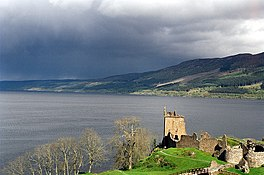
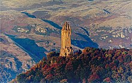
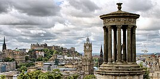

Loch Ness
Loch Ness; Scottish Gaelic: Loch Nis is a large freshwater loch in the
Scottish Highlands extending for approximately 37 kilometres (23 miles) southwest of Inverness. It takes
its name from the River Ness, which flows from the northern end. Loch Ness is best known for claimed
sightings of the cryptozoological Loch Ness Monster, also known affectionately as "Nessie" (Scottish
Gaelic: Niseag). It is one of a series of interconnected, murky bodies of water in Scotland; its water
visibility is exceptionally low due to the high peat content of the surrounding soil. The southern end
connects to Loch Oich by the River Oich and a section of the Caledonian Canal. The northern end connects
to Loch Dochfour via the River Ness, which then ultimately leads to the North Sea via the Moray Firth.
At 56 km2 (22 sq mi), Loch Ness is the second-largest Scottish loch by surface area after Loch Lomond,
but due to its great depth it is the largest by volume in Great Britain. Its deepest point is 230 metres
(126 fathoms; 755 feet), making it the second deepest loch in Scotland after Loch Morar. It contains
more water than all the lakes in England and Wales combined, and is the largest body of water in the
Great Glen, which runs from Inverness in the north to Fort William in the south. Its surface is 16
metres (52 feet) above sea level. It contains a single, artificial island named Cherry Island (Scottish
Gaelic: Eilean Muireach) at the southwestern end. There are nine villages around the loch, as well as
Urquhart Castle; the village of Drumnadrochit contains a "Loch Ness Centre and Exhibition".

Wallace Monument
The National Wallace Monument (generally known as the Wallace Monument) is a 67 metres (220 ft) tower on
the shoulder of the Abbey Craig, a hilltop overlooking Stirling in Scotland. It commemorates Sir
William Wallace, a 13th- and 14th-century Scottish hero.
The tower is open to the public for an admission fee. Visitors approach by foot from the base of the
crag on which it stands. On entry there are 246 steps to the final observation platform, with three
exhibition rooms within the body of the tower. The tower is not accessible to disabled visitors.

Edinburgh
Recognised as the capital of Scotland since at least the 15th century, Edinburgh is the seat of the
Scottish Government, the Scottish Parliament, the highest courts in Scotland, and the Palace of
Holyroodhouse, the official residence of the British monarch in Scotland. It is also the annual venue of
the General Assembly of the Church of Scotland. The city has long been a centre of education,
particularly in the fields of medicine, Scottish law, literature, philosophy, the sciences and
engineering. The University of Edinburgh, founded in 1582 and now one of three in the city, is
considered one of the best research institutions in the world. It is the second-largest financial centre
in the United Kingdom, the fourth largest in Europe, and the thirteenth largest internationally.
The city is a cultural centre, and is the home of institutions including the National Museum of
Scotland, the National Library of Scotland and the Scottish National Gallery. The city is also known
for the Edinburgh International Festival and the Fringe, the latter being the world's largest annual
international arts festival. Historic sites in Edinburgh include Edinburgh Castle, the Palace of
Holyroodhouse, the churches of St. Giles, Greyfriars and the Canongate, and the extensive Georgian New
Town built in the 18th/19th centuries. Edinburgh's Old Town and New Town together are listed as a UNESCO
World Heritage Site, which has been managed by Edinburgh World Heritage since 1999. The city's
historical and cultural attractions have made it the UK's second-most visited tourist destination,
attracting 4.9 million visits, including 2.4 million from overseas in 2018.